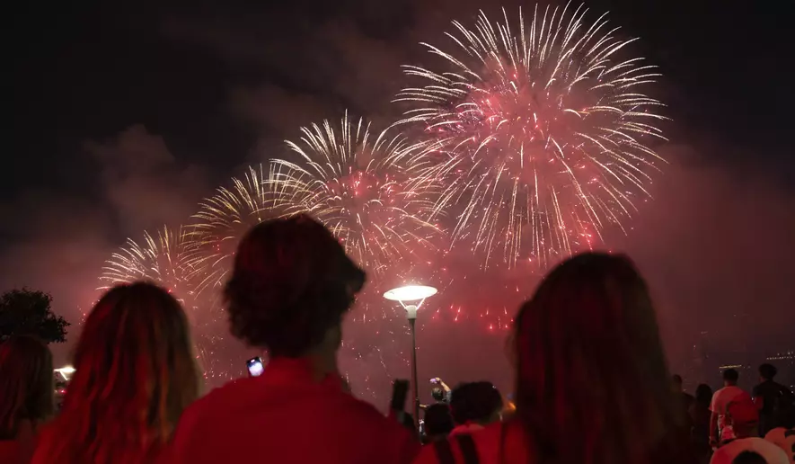

July 05, 2023 05:00 AM
The court will hear cases this fall pertaining to gun rights, federal agency power, and whether "Trump too small" can be trademarked, but the most consequential case for Biden may be Moore v. United States. That case has to do with whether Biden can levy a wealth tax, something he's prominently and repeatedly called for.
"Reward work, not just wealth. Pass my proposal for a billionaire minimum tax," Biden said during the State of the Union address. "Because no billionaire should pay a lower tax rate than a school teacher or a firefighter."Biden later proposed a 25% annual tax on all gains to wealth in excess of $100 million in a given year, including unrealized capital gains which aren't currently taxable. The White House says that the tax would only apply to the top, 0.01% of the highest earners.
While the proposal faces long odds with a Republican-controlled House of Representatives, it could be nixed permanently if the high court rules such a tax is unconstitutional.
The specifics of the Moore case don't involve huge amounts of money, but center around the same issues of taxation and the definition of the word "income."
Charles and Kathleen Moore, a Washington state-based couple, made a nearly $40,000 investment into an Indian company in 2005, and never received any money or other payments from the company even though it made a profit every year. Under the 2017 tax reform law they learned that they were subjected to a mandatory repatriation tax of $14,729. They paid that amount and then filed suit seeing a refund and claiming that the tax violates the constitution's apportionment clause.
D.C. police said that a targeted shooting wounded nine people, including a child and a teenager, during
a July 4th celebration early Wednesday morning.
Metropolitan Police Assistant Chief Leslie Parsons said a dark-colored SUV drove through the 4700 block of Meade Street NE around 1 a.m. and opened fire on the group of revelers.
All the victims suffered non-life-threatening injuries. A 9-year-old child and a 17-year-old were two of the nine victims.
Some of the victims were taken to the hospital by medical responders, and others took themselves to the nearest treatment center. No suspects have been identified, but police are looking for the SUV they said was involved in the incident.
In Salt Lake City, officials opted to cancel its major annual Independence Day fireworks show and replace it for the first time ever with a synchronized drone show.
City officials described the change as a “proactive effort” to alleviate air quality concerns and reduce high wildfire risk in the area, which has been exacerbated by drought and heat.
“As temperatures rise and fire danger increases, we must be conscientious of both our air quality and the potential for wildfires,” Salt Lake City Mayor Erin Mendenhall said in a statement. “The summer holiday shows are a mainstay for Salt Lakers, and we’re excited about adapting to new technology which will provide a safe alternative for our residents and visitors.”
In New Mexico, U.S. Forest Service officials encouraged cities to mark the occasion using silly string, an outdoor movie, or other forms of entertainment instead. In Missouri, many cities also canceled their annual Independence Day fireworks displays, citing extreme heat and drought conditions. And fireworks were postponed in Connecticut due to weather conditions and poor air quality, though some municipalities opted to push their displays to the following weekend. Meanwhile, many cities in California have announced the resumption of fireworks displays this year in contrast with the rest of the country — a change that comes as improved forestry efforts, an infusion of federal and state funds, and wetter weather conditions have afforded it a respite from intense summer wildfires for the first time in years.